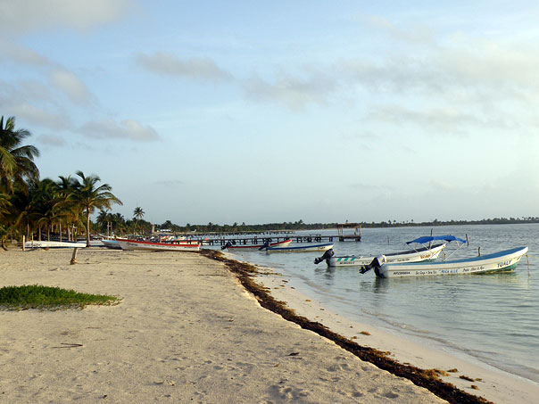
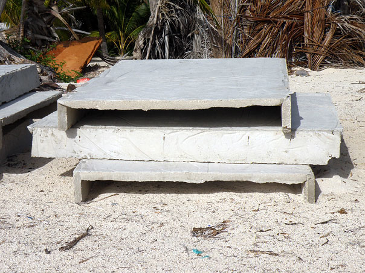
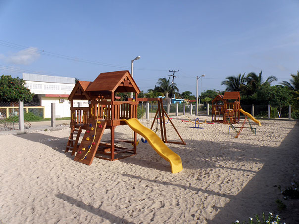

|
 |
 |
Puntos de
Inflexión Ecológica
- Cómo funcionan?
- Transformando círculos viciosos a círculos virtuosos
- Ingredientes para el éxito
- Elaboren sus propios Puntos de Inflexión Ecológica
Historias por Región
Historias por Tema
- Agricultura
- Agua y Cuencas
- Bosques
- Ecosistemas Urbanos
- Educación
- Energía
- Negocios
- Pesquerías
- Salud Pública
Videos Cortos
- Salvando un arrecife coral y una pesquería
(Filipinas) - Revitalizando vecindades urbanas con jardines comunitarios
(Nueva York) - Revirtiendo la deforestación tropical con bosques comunitarios
(Thailandia) - Rellenando aguas subterráneas con captación pluvial
(Rajastán, India) - Escapando la trampa de pesticidas
(India)
Explicando el Éxito
- Salvando un arrecife coral y una pesquería
(Filipinas) - Revitalizando vecindades urbanas con jardines comunitarios
(Nueva York) - Revirtiendo la deforestación tropical con bosques comunitarios
(Thailandia) - Rellenando aguas subterráneas con captación pluvial
(Rajastán, India) - Escapando la trampa de pesticidas
(India)

Ecología Humana: Presenta los principios de la ecología humana que sirven de fundamento a los Puntos de Inflexión Ecológica
México - Quintana Roo - La Cooperativa Pesquera de Vigia Chico
- Autor: David Nuñez
- Aportaciones editoriales: Gerry Marten
Una pequeña aldea pesquera del Caribe Mexicano se ha convertido en modelo de pesca sustentable de langosta por haber adoptado una estrategia singular en la región. Al parcelar el fondo marino de su zona pesquera, y otorgar derechos de pescar sobre el mismo, ésta comunidad ha evitado la “tragedia de los bienes comunes” que azota a tantas otras comunidades pesqueras en la región. La clave del éxito de esta comunidad es su respeto por el estado de derecho a todos niveles, desde las reglas de la Cooperativa hasta las leyes estatales y federales. La exitosa gestión de su pesquería ha inspirado esfuerzos similares de turismo comunitario. Por todos estos motivos, la pesquería de langosta en Punta Allen sobresale como un ejemplo de gestión sustentable de recursos naturales y es utilizada como caso de estudio a nivel mundial.
Dentro de la Reserva de la Biosfera de Sian Ka’an, sobre la costa caribeña de Quintana Roo, unos 40 km al sur de Tulum, se encuentra la próspera aldea pesquera de Javier Rojo Gómez, mejor conocida como Punta Allen. Es una comunidad como ninguna otra que conocemos en México. Además de su privilegiada ubicación, la singularidad de esta aldea es su éxito comercial. Desde que se fundó en 1968 ha sido el líder regional en la pesca de langosta, ya sea en toneladas totales o en el tamaño de las langostas capturadas. Aún más notable es el hecho de que la riqueza generada por esta industria no está concentrada en manos de unos cuantos, sino que está bien distribuida entre los pescadores, muchos de los cuales tienen una segunda casa en Mérida, o en otros poblados de la Península de Yucatán. Pero estas cosas las aprende uno después. Lo primero que uno nota es el pueblo en sí.
Esta es una aldea pequeña, con una población de tan solo algunos cientos, y solo tiene electricidad unas cuantas horas al día. Así que después de dos horas de brecha uno espera encontrar un pueblo empobrecido de chozas de cartón y techos de lámina. Pero aquí las casas son de bloques de cemento, muchas de ellas pintadas de colores llamativos. Lo que es más, hay un centro de acopio de reciclables, una biblioteca, una clínica y un patio de recreos extrañamente vació, porque a diferencia de tantas comunidades rurales en México, Punta Allen tiene uno de los índices de natalidad más bajos del país. De hecho, desde mediados de los 1990s el índice de natalidad es comparable al de naciones como Estonia y Rusia, que demuestran el menor crecimiento poblacional.
En los 1930s, el Gobierno Federal otorgó derechos exclusivos de pesca de la langosta (y otras especies lucrativas) a cooperativas pesqueras. (Estas cooperativas son a grandes rasgos, el equivalente marino del sistema ejidal.) En los 1960s, pescadores de la Cooperativa de la Isla de Cozumel migraron a tierra firme y se establecieron en Punta Allen con la intención de capturar langosta. En 1968, debido a la distancia de la Isla, 49 pescadores formaron su propia cooperativa, llamándola Vigía Chico, por el centro cocotero que hasta entonces era el motor de la economía local. La población actual de Punta Allen es alrededor de 400, de los cuales casi 100 son pescadores.
Tras varios intentos fallidos, la pesca de langosta por fin tuvo éxito en los 1980s. Cancún finalmente había crecido lo suficiente para requerir envíos constantes de langosta, e inversiones en equipo por parte del gobierno federal y estatal por fin permitieron cosechas suficientemente grandes para justificar el largo traslado a Cancún.
Sin embargo, estas mismas oportunidades existieron para los pescadores de toda la región. ¿Por qué el ejemplo de Punta Allen es tan especial? La respuesta más sencilla es que mientras otras cooperativas optaron por un “acceso abierto” en que cualquiera puede pescar donde sea, la Cooperativa de Vigia Chico adoptó una estrategia distinta.
En los 1960s, cuando la aldea estaba aun más aislada que hoy en día, su único contacto con el resto del mundo era por embarcación. Ocasionalmente llegaba un grupo de Cubanos a comerciar lo que pudieran. De estas visitas los lugareños aprendieron a utilizar refugios para las langostas, que llamaron “sombras” o “casitas Cubanas”. Don Antonio Perreira, fundador de la Cooperativa, fue el primero en experimentar con estos refugios, armándolos de la palma Chit. Al crearse la Reserva de la Biosfera de Sian Ka’an en 1986, se prohibió la tala de esta palma, y los lugareños experimentaron con tambos aplanados y láminas de asbesto, antes de decidirse por el modelo actual que es de ferrocemento.
La cosecha normalmente requiere de equipos de dos: uno para levantar el refugio, y el otro para capturar la langosta en una bolsa o “jamo”, que es una pequeña red tipo cazamariposas. La langosta es examinada y medida, ya que las multas pueden ser graves: mil pesos por cada hembra con huevos o individuo que no cumpla la talla mínima.
Al carecer de mucho arrecife, los langosteros de Vigía Chico son obligados a capturar langostas juveniles en la Bahía de Ascensión. Pero al colocar los refugios, protegen a las langostas de depredadores y así aumentan artificialmente la población de langosta. Dado que el construir, colocar y mantener las casitas requiere de una inversión significativa, las Cooperativa Vigía Chico parceló el fondo marino para evitar que pescadores capturaran langostas de refugios que no habían colocado ellos mismos. Estos campos se distribuyeron entre los miembros y pueden ser re-negociados antes de cada temporada.
Para hacer valer estos derechos de propiedad, se aplicaron castigos severos para quienes rompen las reglas. Pescar en un campo ajeno resulta en la expulsión de la Cooperativa del infractor, además de la transferencia al dueño del campo, de todo su equipo de pesca incluyendo la lancha.
De igual importancia ha sido el apoyo del sistema judicial en defender los derechos de la Cooperativa. Los primeros miembros en ser expulsados alegaron contra la idea misma de parcelar el mar. Después de todo, si el mar pertenece a la nación, podría alegarse que todo ciudadano debe tener el mismo acceso al mismo. Sin embargo, los fallos de la corte han determinado que la concesión pesquera otorgada a Cooperativas incluye el derecho de gestionar la misma a discreción de la administración de la Cooperativa.
Quizá este sea el motivo por el cual en esta aldea el respeto al derecho se extiende a las leyes federales – algo realmente inusual en el México rural – por lo que aquellos que violan la temporada de veda también son expulsados de la Cooperativa.
A lo largo de los años se han implementado otras reglas para garantizar la sustentabilidad de la pesca. Con la creación de la Reserva, se prohibió pescar con equipo de buceo, lo cual limita de manera drástica la captura posible. También se prohibieron las redes de pesca, a beneficio de los delfines, tortugas, rayas y otras especies de la región. Los ganchos que hieren o matan a la langosta antes de que pueda ser inspeccionada, también han sido remplazados con bolsas lo cual permite a los pescadores regresar a las hembras con huevos o a las langostas que no cumplen la talla mínima.
Este respeto por las reglas, ya sean internas o impuestas por la Reserva, el estado o la federación es quizá el más grande misterio de Punta Allen. En una nación que a veces parece jactarse de aquellos que tuercen la ley, ¿porque este pueblito en medio de la nada toma en serio la ley? “¡Todos nos lo preguntan!” contesta riéndose Emilio Mendoza, langostero de tercera generación. Quizá su aislamiento le dotó un carácter más auto-suficiente y permitió madurar a la comunidad sin la influencia externa de funcionarios corruptos. O quizá la pregunta que debamos hacernos es ¿si esta aldea puede hacer las cosas bien, porque no el resto del país?
En 1988 el Huracán Gilberto devastó la pesquería de langosta. Este recordatorio de su fragilidad llevó a los residentes de Punta Allen a reflexionar sobre su bienestar a largo plazo. Poco después de invertir en una clínica comunitaria, todas las hembras casadas habían adoptado métodos anticonceptivos para limitar el tamaño de sus familias, acogiendo el lema de “pocos hijos para darles mucho”. Ahora muchos de sus hijos cursan la universidad, y varios regresan a pescar langosta después de graduarse.
El Huracán Gilberto también puso en dificultades financieras a la cooperativa, al tener que abandonarse los planes para una planta procesadora. Ante tal endeudamiento, muchos abandonaron la cooperativa. Aquellos que persistieron implementaron una nueva regla, la cual indica que las nuevas membresías solo pueden ofrecerse a los hijos de miembros actuales. Esta regla, junto con la baja tasa de natalidad, ha ayudado a estabilizar el tamaño de la Cooperativa, contribuyendo aún más a la sustentabilidad de la pesquería langostera.
Sorprendentemente los fracasos del pasado no intimidan a la Cooperativa Vigía Chico, y de nuevo está a la vanguardia de los esfuerzos por vender su cosecha directamente al consumidor, eliminando a los intermediarios de los que ha dependido en el pasado. En alianza con otras cooperativas de la Reserva de Sian Ka’an, así como de la Reserva de Banco Chinchorro más al sur, recientemente formaron una empresa colectiva llamada Integradora de Pescadores de Quintana Roo que vende directamente al consumidor bajo la marca “Chakay”.
La asistencia obtenida por parte del gobierno a través de la Federación de Cooperativas Pesqueras de Quintana Roo, ha sido fundamental a cada paso, desde la fundación del poblado hasta la obtención de créditos y asesorías. Este tipo de federación se ha exportado a otros estados de México. Y la experiencia de la Cooperativa Vigía Chico ha sido replicada, con resultados variables, en otras cooperativas vecinas y comunidades de las costas del Pacífico y Golfo. Este modelo también se ha aplicado en Panamá, Republica Dominicana, Belice y Honduras.
Estudiantes e investigadores de universidades Mexicanas y Estadounidenses visitan regularmente esta aislada comunidad. El Programa de las Naciones Unidas para el Desarrollo y el Banco Mundial utilizan a la Cooperativa Vigía Chico como un exitoso caso de estudio, y la Cooperativa orgullosamente exhibe un premio de la Iniciativa Ecuatorial en sus oficinas de Tulúm.
El éxito langostero se ha propagado a otras empresas comunitarias. Recientemente la comunidad ha acogido al eco-turismo como una fuente alterna de ingresos, particularmente durante la temporada de veda de Febrero a Julio. Aunque la pesca deportiva ha sido una industria menor desde mediados de los 1970s, las opciones para el turista se han multiplicado a partir de los 1990s. Ahora existen cuatro distintas cooperativas turísticas que ofrecen tours de esnorquel, avistamiento de aves y avistamiento de delfines, además de hospedaje. El turismo está alcanzando a la langosta en cuanto a ingresos generados. Aunque ha habido algunos conflictos entre ambas industrias, estos son minimizados por el hecho de que muchos miembros de la Cooperativa pesquera también pertenecen a alguna de las cooperativas turísticas. Existe un entendimiento generalizado que no se vale ejercer ambas actividades simultáneamente, pues hacerlo sería quitarle negocio a su socio.
Obviamente con el crecimiento económico han llegado otros cambios, y todos dicen que esta ya no es el mismo pueblo en el que crecieron. Esta sofisticada comunidad teme los daños que el desarrollo descontrolado ha causado en Cancún y Playa del Carmen, y no confía que su ubicación en la Reserva de la Biosfera la ampare del mismo destino. Y aunque la comunidad da la bienvenida a todo aquel que quiera estudiar y aprender de su ejemplo, también lucha por limitar las influencias externas negativas. Herencia Punta Allen es una asociación civil que, entre otras cosas, se opone a la pavimentación de la brecha que les une al resto del mundo. Dicen que su pueblo es un paraíso, y como tal, debe ser difícil entrar. Estoy de acuerdo, y les deseo la mejor de la suerte.

La playa/La playa de la aldea Punta Allen con sus lanchas para pescar a langostas.

"Casitas cubanas"/Refugios colocados sobre el fondo del mar para atraer langostas. Las langostas son fácilmente capturadas al empinar el refugio.

Patio de recreos/Este patio de recreos es más que suficiente para los niños de la aldea Punta Allen, que tiene uno de los índices de natalidad más bajo de México.
Este sitio web contiene materia traducida del sitio web www.ecotippingpoints.org.
Traducción: David Nuñez. Redacción: Gerry Marten